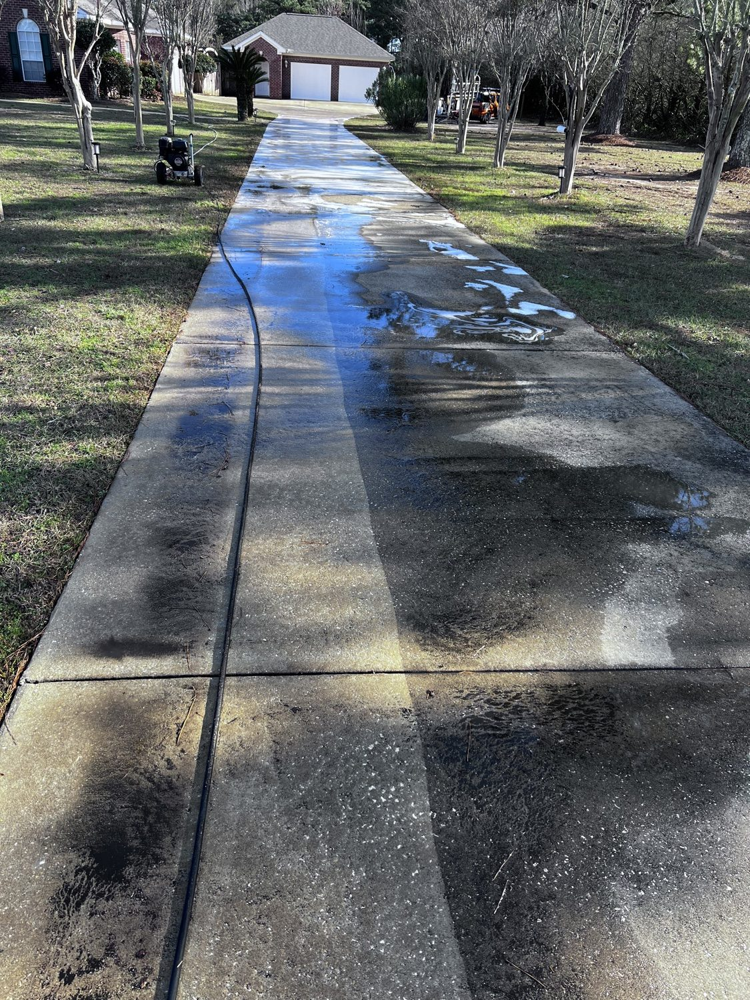

From the blog
Driveway Pressure Washing in Mobile, AL: What to Expect
October 12, 2026

Your driveway takes a beating in Mobile. Red clay tracked in from the yard, tire marks, oil drips, pine sap, and that dark mildew film our humidity paints on everything. A good pressure wash does not just make it look better. It removes the slippery film that builds up on concrete and keeps the surface from staining permanently. Here is what a professional job actually involves.
What we do on a driveway wash
- Pre treat the concrete. We apply a cleaning solution first and let it dwell. This loosens the mildew, algae, and road film so the water does the work instead of brute force pressure.
- Surface clean, not just blast. We run a rotating surface cleaner that cleans wide even passes. This avoids the stripe marks and etched spots a hand wand leaves when it lingers too long in one place.
- Hit the stubborn spots. Oil stains, rust drips, and tire marks get extra attention with stronger treatment. Old oil stains may lighten instead of disappearing completely, and we will tell you that up front.
- Clean the edges. The curb line and the edges along your lawn collect the worst buildup. We edge them out so the whole driveway reads clean.
- Rinse and clear. Everything gets rinsed clean, and we blow or rinse debris back into the yard so you are not left with a muddy mess.
How often does a driveway need it?
Most Mobile driveways look their best with a wash every one to two years. Homes under big trees or near dirt roads fill in faster, sometimes needing a yearly touch up. Driveways that never get washed start to hold stains in the pores of the concrete, and after enough years even a professional wash will not bring back the original color. A regular schedule costs less than replacing stained concrete.
Why not just rent a machine and do it?
You can, and plenty of folks in Daphne, Spanish Fort, and Fairhope do. But a rental wand with no surface cleaner will leave zebra stripes across your concrete, and too much pressure etches lines into the surface that never come out. Softening the concrete too much also lets stains soak in deeper next time. A professional surface cleaner lays down even passes at the right pressure, and the pre treatment does the real work on the growth. It usually takes us a fraction of the time a DIY job takes, and there is no rental line, no hauling a machine, and no learning on your driveway.
What it costs
Our driveway wash pricing is simple: short driveway $149, long driveway $199, extra long $279. Most homes fall into the first two. If your driveway is unusual, big circular drives or lots of extra parking pad, we will quote it before we start. No guessing, no surprises.
Keep it clean longer
- Rinse off red clay and mud after yard work instead of letting it bake in.
- Fix oil leaks in your vehicles. Fresh drips stain fast in the heat.
- Trim back grass and beds along the edges so debris does not sit on the concrete.
- Ask us about concrete sealing after a wash. Sealer keeps new stains on the surface where they rinse off.
Driveway looking rough? We can fix that in one visit.
Kinney Cleaning Services pressure washes driveways across Mobile County and the Eastern Shore. Veteran owned and operated, with 5-Star Google Reviews.
Call (251) 767-0754 Get a Custom Quote